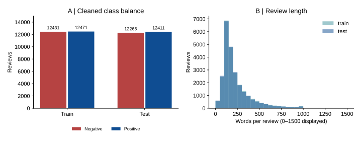
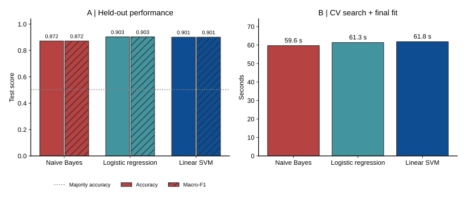
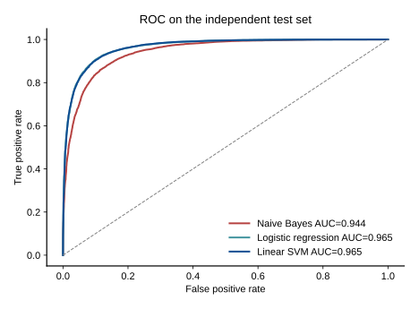
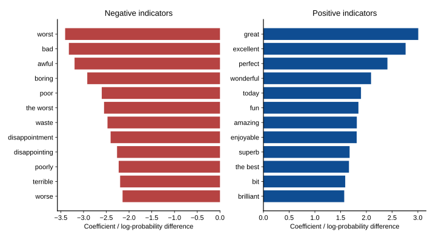

EXPERIMENT 01 / SENTIMENT CLASSIFICATION
一条评论。
三种理解方式。
以 50,000 条公开电影评论为起点，比较朴素贝叶斯、逻辑回归和线性支持向量机。让数据、评估与误差共同解释模型的表现。
ENGLISH REVIEWSREAL MEASUREMENTS
REPRODUCIBLE PIPELINE
01 / PROTOCOL
先划定边界，再训练模型。
数据从哪里来
从 Stanford 原始发布页采集 HTML、发现下载链接并获取公开数据包。原始有标签评论 50,000 条；排除 50,000 条无标签数据。此处使用公开数据集采集器，未逐页爬取 IMDb 评论。
HTML 清洗、空值检查、矛盾标签剔除、同划分去重、跨划分测试重复移除。共删除 422 条，保留训练 24,902 条和测试 24,676 条。
如何保持评估可信
保留原始训练/测试边界；固定随机种子 42。训练集分层 3 折交叉验证，词表与 IDF 在每个训练折内部拟合。评分、文件名和标签均不进入正文特征。
相同的 TF-IDF 1–2 gram，最多 40,000 特征。每类模型搜索两个正则化/平滑参数，按 CV macro-F1 选择模型，之后评估独立测试集。

02 / RESULTS
性能与成本，放在同一张表里。
CV 选择 Linear SVM。独立测试准确率 90.11%，95% bootstrap CI 为 89.72%–90.45%。多数类基线准确率为 50.30%。
本次独立测试准确率最高的是 Logistic regression（90.33%），比 CV 所选模型高 0.22 个百分点。训练 CV 与独立测试排序可能不同；本实验保留事先按训练 CV 作出的选择，不依据测试表现改选模型。
| 模型 | CV Macro-F1 | 准确率 | Precision | Recall | Macro-F1 | ROC-AUC | 搜索耗时/s | 准确率95% CI |
|---|---|---|---|---|---|---|---|---|
| Naive Bayes | 87.90% | 87.19% | 88.45% | 85.71% | 87.18% | 0.9443 | 59.6 | 86.74%–87.58% |
| Logistic regression | 89.92% | 90.33% | 90.15% | 90.68% | 90.33% | 0.9652 | 61.3 | 89.95%–90.68% |
| Linear SVM | 90.07% | 90.11% | 90.19% | 90.14% | 90.11% | 0.9649 | 61.8 | 89.72%–90.45% |

差异是否明确？
- 相对 Naive Bayes 的准确率差值 95% CI：[2.54, 3.32] 个百分点。区间未包含 0；结论仅适用于本次测试样本。
- 相对 Logistic regression 的准确率差值 95% CI：[-0.40, -0.04] 个百分点。区间未包含 0；结论仅适用于本次测试样本。
- 相对 多数类基线 的准确率差值 95% CI：[39.13, 40.51] 个百分点。区间未包含 0；结论仅适用于本次测试样本。
1000 次评论级配对 bootstrap，仅反映当前测试样本的不确定性；不包含训练随机性、电影聚类或领域变化。

03 / INTERPRETATION
模型学到了什么，又错在哪里。
本机搜索耗时最少的是 Naive Bayes（59.6 秒）。CV 所选模型的搜索耗时为 61.8 秒，相对该最快模型的测试准确率差值为 +2.92 个百分点。这同时比较了预测效果与计算成本；搜索包含特征计算，不等同于分类器本身的速度。
负面特征
worst / bad / awful / boring / poor / the worst / waste / disappointment / disappointing / poorly / terrible / worse
正面特征
great / excellent / perfect / wonderful / today / fun / amazing / enjoyable / superb / the best / bit / brilliant

评论长度与表现
| 长度分组 | 样本数 | 准确率 |
|---|---|---|
| <100 words | 3,138 | 90.63% |
| 100–299 words | 16,267 | 90.21% |
| >=300 words | 5,271 | 89.47% |
事后描述性分析，不用于重新选择模型。
适用范围
这是强极性英文电影评论的二分类实验。中性评论、中文、电商评价及新时期数据没有得到验证。清理了重复样本，因此分数不能直接与原始数据排行榜比较。
否定、讽刺和混合情感是需要人工检查的可能误判机制；示例本身不证明归因成立。
打开一条真实误判
每个真实类别按 ID 顺序展示最多 6 条误判；正文最多 1500 字符。结果 CSV 每类最多保留 40 条。这些是定性示例，非随机抽样。
真实：负面 / 预测：正面 · test/neg/10003
brass pictures (movies is not a fitting word for them) really are somewhat brassy. their alluring visual qualities are reminiscent of expensive high class tv commercials. but unfortunately brass pictures are feature films with the pretense of wanting to entertain viewers for over two hours! in this they fail miserably, their undeniable, but rather soft and flabby than steamy, erotic qualities non withstanding. senso '45 is a remake of a film by luchino visconti with the same title and alida valli and farley granger in the lead. the original tells a story of senseless love and lust in and around venice during the italian wars of independence. brass moved the action from the 19th into the 20th century, 1945 to be exact, so there are mussolini murals, men in black shirts, german uniforms or the tattered garb of the partisans. but it is just window dressing, the historic context is completely negligible. anna galiena plays the attractive aristocratic woman who falls for the amoral ss guy who always puts on too much lipstick. she is an attractive, versatile, well trained italian actress and clearly above the material. her wide range of facial expressions (signalling boredom, loathing, delight, fear, hate ... and ecstasy) are the best reason to watch this picture and worth two stars. she endures this basically trashy stuff with an astonishing amount of dignity. i wish some really good parts come along for her. she really deserves it.
真实：负面 / 预测：正面 · test/neg/10015
earth has been destroyed in a nuclear holocaust. well, parts of the earth, because somewhere in italy, a band of purebred survivors--those without radioactive contamination--are holed up in a massive mansion surrounded by lush grounds, waiting for the next opportunity to go hunting for those with polluted blood. the final executioner is the story of one of their would be victims, alan (william mang, who looks, not surprisingly, a lot like kurt russell), and his efforts to take down the legally sanctioned hunters, who are led by edra (marina costa) and erasmus (harrison muller jr. ). alan has been trained to kill by former nypd cop sam (woody strode) who mostly hangs around giving his pupil moral support and mooching for tinned meat. strode is by far the best thing about the film, though he doesn't look at all well and only appears for about a third of the running time. as for the story, it's a blending of elements from better films and stories, including ten little indians, the most dangerous game, and escape from new york. the final executioner moves along at a fair pace and provides reasonable entertainment for less discriminate action fans.
真实：负面 / 预测：正面 · test/neg/1003
this tale of the upper-classes getting their come-uppance and wallowing in their high-class misery is like a contemporary mid-sommerish version of an old joan crawford movie in which she suffered in mink. here, people behave in a frightfully civilized manner in the face of adversity. a well-heeled london solicitor, (tom wilkinson), discovers that not only is his wife having an affair with the local gentry but that she has also killed their housekeeper's husband in a hit-and-run accident. he throws up, but otherwise his stiff-upper-lip hardly quavers. written and directed by julian fellowes, who won an oscar for writing "gosford park", (this is his directorial debut), from a novel by nigel balchin, it's quite comical although i am not sure how much of the comedy is intended. it's like a throw-back to british films of the forties where characters all behaved like characters in books or plays rather than like people might in real life. however, it's not all bad. wilkinson is terrific, even if you never believe in him as a person while emily watson, (the adulterous wife), and rupert everett, (the highly amoral high-class totty), are both very good at covering the cracks in the material. tony pierce-roberts' cinematography ensures that no matter how hard it is on the ear it's always good on the eye.
真实：负面 / 预测：正面 · test/neg/1004
seeing this film for the first time twenty years after its release i don't quite get it. why has this been such a huge hit in 1986? its amateurishness drips from every scene. the jokes are lame and predictable. the sex scenes are exploitative and over the top (that is not to say that miss rudnik does not have nice boobs!). the singing is "schrecklich". the only genuinely funny scene is the big shoot out when the gangsters die break dancing, a trait that dates the movie firmly to the mid-eighties. it's really quite puzzling to me how incapable i am to grasp what evoked the enthusiasm of the cheering audiences in 1986 (and apparently still today, reading my fellow imdbers comments).
真实：负面 / 预测：正面 · test/neg/10050
from time to time it's very advisable for the aristocracy to watch some silent film about the harsh life of the common people in order to remind themselves of the privileges and the comfortable life that they have enjoyed since the beginning of mankind or even before in comparison with the complicated and hard work that common people have to endure everyday since the aristocrats rule the world. and that's what happens in "the love light", the first film directed by dame france marion who will be famous afterwards in the silent and talkie world thanks overall to her work as a screenwriter; better for her, certainly, because her career as a film director doesn't impress this german count. the film tells the story of dame angela carlotti ( dame mary pickford ) a merry italian girl who lives surrounded by a "picturesque squalor" ( an important difference of opinion between upper and low classes; aristocrats prefers to live surrounded by "picturesque luxury" ); she has two brothers and a secret admirer but all she gives him in return is indifference. destiny begins to work hard and pretty soon war is declared and dame angela's two brothers enlist and in the next reel both are dead. but destiny is even crueller and dame angela meanwhile falls in love with a german!! and to make things worse, she doesn't know that her teutonic sweetie is a spy and that the light signals that she sends to him every night from the lighthouse she maintains thinking that is a love signal, don't mean "ic
真实：负面 / 预测：正面 · test/neg/10053
caution spoiler: at the end of the movie it is announced that the bridge collapsed just a few days after it was captured. the impression is that the attack was all for nothing. in reality, taking the bridge at remagen was the last important victory for the western allies. it was the crossing of the rhine that the allies had been trying to achieve for six months. because the remagen bridge was taken, the war ended in just a few weeks. the bridge only need to last for a day after it was captured. this was enough time for the americans to send combat engineers and a large protective force to the other side, and they could then start building a series of pontoon bridges. the taking of the bridge was a complete success, and meant the that the end of the war was near, and would not last through the summer. contrary to the cynical nature of the film, the victory was heralded with elation by the troops who did it. they knew how vital the battle was. this film has little to do with real history. it was more a reflection of the cynical nature of the time in which it was produced.
真实：正面 / 预测：负面 · test/pos/10018
i have certainly not seen all of jean rollin's films, but they mostly seem to be bloody vampire naked women fests, which if you like that sort of thing is not bad, but this is a major departure and could almost be cronenberg minus the bio-mechanical nightmarish stuff. except it's in french with subtitles of course. a man driving on the road at night comes across a woman that is in her slippers and bathrobe and picks her up, while in the background yet another woman lingers, wearing nothing. as they drive along it's obvious that there is something not right about the woman, in that she forgets things almost as quickly as they happen. still though, that doesn't prevent the man from having sex with her once they return to paris & his apartment. the man leaves for work and some strangers show up at his place and take the woman away to this 'tower block', a huge apartment building referred to as the black tower, where others of her kind (for whom the 'no memory' things seems to be the least of their problems) are being held for some reason. time and events march by in the movie, which involve mostly trying to find what's going on and get out of the building for this woman, and she does manage to call robert, the guy that picked her up in the first place, to come rescue her. the revelation as to what's going on comes in the last few moments of the movie, which has a rather strange yet touching end to it. in avoiding what seemed to be his "typical" formula, rollin created, in this,
真实：正面 / 预测：负面 · test/pos/10024
while i can't say whether or not larry hama ever saw any of the old cartoons, i would think that writing said cartoons, file cards, and some of the comics would count for something. for fans of the old cartoon, this is pretty much a continuation of the same, except with a few new characters - and a more insane cobra commander. we still have all the old favorites too, but on a personal note, one thing that always irritated me was this "duke in charge" stuff, when there are tons of other *officers* around instead. the battle sequences are similar to the old series as well; the main trick here seems to be the cgi. it's overall pretty good, if not a little over-the-top.
真实：正面 / 预测：负面 · test/pos/10038
naturally, along with everyone else, i was primed to expect a lot of hollywood fantasy revisionism in they died with their boots on over the legend of custer. just having someone like errol flynn play custer is enough of a clue that the legend has precedence over the truth in this production. and for the most part my expectations were fulfilled (in an admittedly rousing and entertaining way). yet even in this obviously biased (and much criticized) retelling of the custer story, i was struck by some of the points made in this movie that, sometimes subtly but nevertheless solidly, seemed to counter the typical clichés of manifest destiny and unvarnished heroism usually found in westerns of the early 20th century. for instance, even while this film attempted to whitewash it's hero, certain scenes still suggested the more flawed and foolish character of the real-life custer: 1) his initial entrance at the west point front gate, in which his arrogance and pompousness is a clear aspect of his character. 2) his miserable record at west point, which seems to be attributed as much to custer's cluelessness about the demands of military service as any other factor; there are moments in the way flynn plays custer at west point where he seems downright stupid. 3) custer's promotion to general is not only presented as a ridiculous mistake, but it plays out as slapstick comedy. i half-expected to see the marx brothers or abbott and costello wander into the scene. 4) custer's stand against j
真实：正面 / 预测：负面 · test/pos/10062
for late-80s cheese, this really isn't so bad. there are a lot of pretty funny throwaway one-liners ("that was grand theft!" - "thanks!") and madonna gives a fine performance; nothing award-worthy here, but that goes for razzies as well as oscars. i'm curious to know if the movie would have been better received if she had used her regular (pre-british influenced) speaking voice rather than the hyper-bronxy accent used instead. oh well. as a side note, i got to meet one of the actors who played one of the motorcycle cops through my work; he said that it was a fun film to work on but gave me the sad news that the actor who played buck the ups delivery guy died about a year after who's that girl
真实：正面 / 预测：负面 · test/pos/10066
madonna gets into action, again and she fails again! who's that girl was released just one year after the huge flop of shangai surprise and two after the successful cult movie desperately seeking susan. she chose to act in it to forget the flop of the previous movie, not suspecting that this latter could be a flop, too. the movie received a bad acceptance by american critic and audience, while in europe it was a success. madonna states that "some people don't want that she's successful both as a pop star and a movie-star". the soundtrack album, in which she sings four tracks sells well and the title-track single was agreat hit all over the world, as like as the world tour. the truth isthat madonna failed as an actress 'cause the script was quite weak. butit's not so bad, especially for those who like the 80's: it's such a ramshackle, trash, colorful and joyful action movie ! at the end, it's very funny to watch it.
真实：正面 / 预测：负面 · test/pos/10073
so, madonna isn't meryl streep. still, this is one of her first films and a comedy at that. give her a break! sure, the movie is mediocre at best and pales in comparison to its earlier counterpart w/ katherine hepburn, bringing up baby. for what it is, though(a piece of fluff), it's quite a bit of fun to watch. i've yet to hear anyone that slams madonna's acting skills back it up w/ evidence or even adjectives other than "awful", "bad", or other such vague descriptive words. if you wanna see bad acting or justify the argument that singers should stick to singing, how about whitney houston?? she's had the most undeserved commercial success of any actress in history and couldn't act her way out of a hatbox. the american public obviously cannot discern the difference between a credible performance in a movie and star power. i think madonna has always been at least credible in her movies. get real people. madonna-bashing is so 90's.
04 / LIVE DEMO
给模型一条新的英文评论。
使用由训练 CV 选择的已保存模型；不重新训练。输出类别及决策分数，未校准，不代表可靠置信度。
REPRODUCE THE EXPERIMENT
从数据到报告，一条流水线。
sentiment-lab run --offline运行配置、数据指纹、逐折结果、每条测试预测和环境版本均保存在项目中。首次在新环境执行时去掉 --offline 以采集数据。
阅读完整中文实验报告 ↗